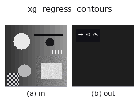

xldgeom op• Datenarten: contour → feature
• Aufruf: fullseye.apply(img, "xg_regress_contours", a=0.5, b=0.5) (das 2-D-Modell ist ein Bild plus zwei skalare Regler a,b∈[0,1])

*Die Abbildung ist die tatsächliche Ausgabe auf einer synthetischen 128×128-Eingabe. Links Eingabe, rechts Ausgabe (ein Nicht-Bild-Rückgabewert wird als Wert gezeigt).*
RMS-Residuum der Total-Least-Squares-Gerade = sqrt(kleinerer Kovarianz-Eigenwert).
> Die ausführliche Beschreibung unten ist der Originaltext — Zusammenfassung und Überschriften sind übersetzt.
The perpendicular (orthogonal-regression) residual variance of a point set
equals its smallest covariance eigenvalue; its square root is the RMS
perpendicular distance to the best-fit line.
• Leitfaden zur Familie gallery2d_geometry
• Katalog der Beispieldaten (Download-URLs / Lizenzen) — 2-D nutzt skimage.data (BSD/Public Domain) plus synthetische Bilder, 3-D nennt Download-URLs echter Datenquellen (Stanford, PDS, …).
• Herkunft und Literatur der Operatoren — die Quellen der Forschung/Verfahren, auf denen diese Operatorfamilie beruht.
• Der kanonische Algorithmus (Autor, Jahr) und seine Anwendungen stehen im Familienleitfaden oben.
Das Programm unten ist nachweislich lauffähig (gleiche Eingabe wie die Abbildung). In der Studio-Hilfe wird dieser Block zu Schaltflächen, die es sofort laden und ausführen.
threshold 0.50 0.50 sk_find_contours 0.50 0.50 xg_regress_contours 0.50 0.50
▸ Load this pipeline · Load & run
• gallery2d_geometry — py -3.11 examples/gallery2d_geometry.py
feature als Eingabe)xldgeom)xg_moments · xg_area_center · xg_eccentricity · xg_orientation · xg_elliptic_axis · xg_height_width_ratio · xg_clip_contours · xg_gen_polygons
*Provenance: ops.py — 2D Operator-Registry. Diese Notiz wird von tools/opdocs.py md erzeugt (nicht von Hand bearbeiten).*
© 2026 Kazufumi Furuse — Fullseye operator documentation. Licensed under Apache-2.0.